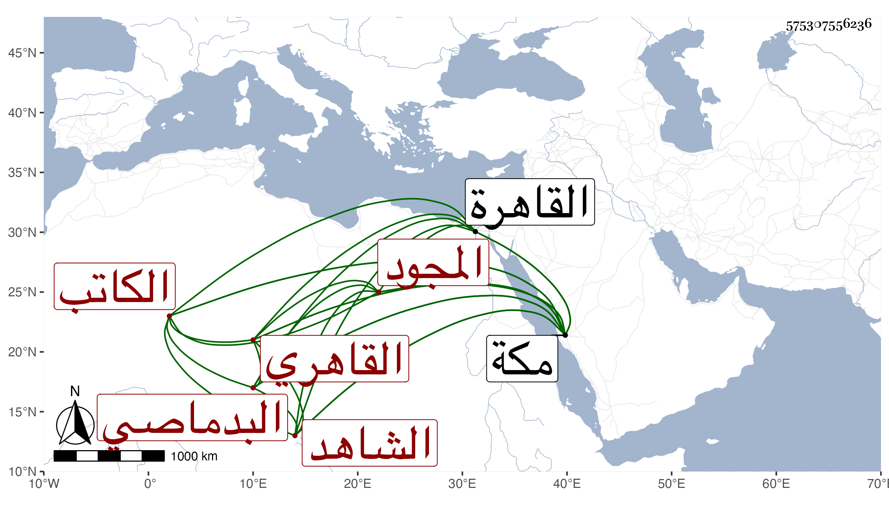

0902Sakhawi.DawLamic.ITO20230111-ara1.EIS1600.575307556236
Biography ID: 575307556236
810
علي بن عبد الرحمن نور الدين البدماصي القاهري الشاهد الكاتب المجود جاور بمكة كثيرا . ذكره شيخنا في معجمه وقال أنه كان ماهرا في صناعة الخط تعلمت منه بمكة في سنة ست وثمانين وعاش بعد ذلك وكان يجلس للشهادة في بعض الحوانيت ظاهر القاهرة ويعلم الناس المنسوب . مات سنة اثنتين وذكره في أنبائه باختصار وكذا المقريزي في عقوده وقال : نعم الرجل كان .
